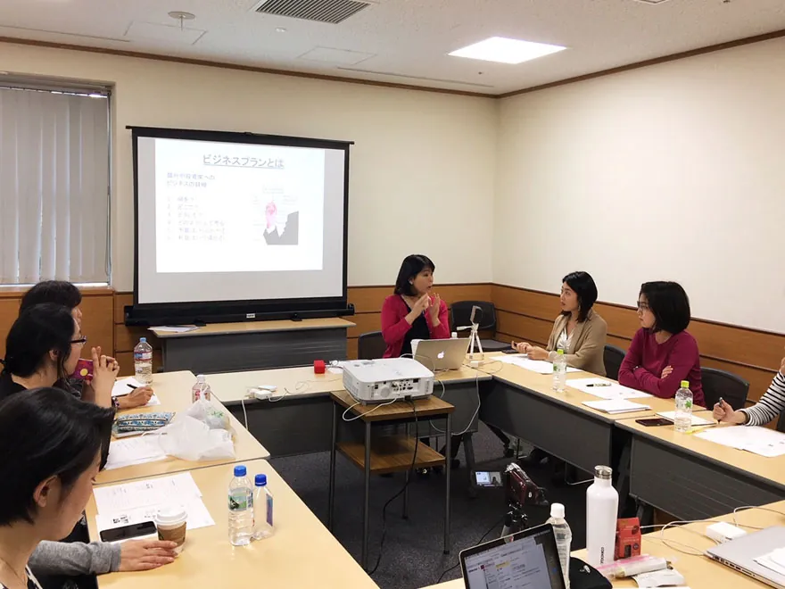

経理処理・運用に関する
よくある質問
稟議や導入の検討で確認されることの多い質問をまとめました。税務の取扱いは一般的な考え方を示したもので、実際の処理は貴社の顧問税理士にご確認ください。

経理・税務
福利厚生費として処理できますか。
一般に、福利厚生費として整理するには「全従業員に機会が均等であること」「社内規程に定めがあること」「金額が社会通念上妥当であること」「会社から直接支払われること」などが確認されます。本プログラムはこれらを踏まえて設計していますが、福利厚生費として認められることを保証するものではありません。また、使用者が使用人の子など特別の関係がある者の学資に充てるために給付する金品は、給与として課税される場合があります（所得税法第9条第1項第15号、所得税法施行令第29条）。実際の処理は、貴社の顧問税理士にご確認ください。
役員の子女だけが利用する場合はどうなりますか。
対象を役員や一部の従業員に限定すると、一般に「機会の均等」を満たしにくくなり、福利厚生費ではなく役員や従業員への給与として扱われる可能性があります。本プログラムの規程ひな形は、対象を全従業員の子女とする前提で作成しています。取扱いは貴社の顧問税理士にご確認ください。
請求書の宛名・但し書きはどう書けますか。
宛名は貴社名で発行します。但し書きは「従業員家族向け教育プログラム受講料（○年度・○名分）」のように、貴社の経理処理に合わせた表記をご相談ください。勘定科目は貴社でご判断いただくもので、実際の処理は貴社の顧問税理士にご確認ください。
協賛と福利厚生は併用できますか。
併用できます。目的と経理処理が異なるため、ご契約と請求書はプログラムごとに分けて発行します。
運用
対象となる子女の年齢は。
年長から大学生までを、年代別の5つの段階で設計しています。段階ごとの開講状況と受講形態は、導入相談の際にご案内します。
全国どこからでも受講できますか。
オンラインで受講できるプログラムを中心に構成しているため、事業所や従業員の所在地を問わず導入を検討いただけます。受講形態（オンライン・対面）と対応地域は、導入相談の際にご案内します。出前授業や職場見学など対面で行うものは、地域ごとに個別に調整します。
途中退会や、年度途中の入社者はどう扱いますか。
年度途中の退会・追加の精算方法は、ご契約の際に貴社と取り決めます。規程ひな形には、年度途中に入社した従業員の子女も対象に含める条文例を入れています。
受講実績報告書には何が書かれますか。
受講者数、実施回数、実施したプログラムの内容などの実施記録です。成果を測る指標や、受講者一人ひとりの評価は記載しません。
従業員のお子様の個人情報は、会社に共有されますか。
受講料の請求に必要な範囲（対象者であることの確認など）に限って、貴社と共有します。共有する項目は、従業員の申込時に明示します。受講実績報告書は人数などの集計で作成し、個人名は記載しません。
導入までにどのくらいの期間がかかりますか。
規程の改定と社内告知にかかる期間は、貴社の社内手続きによって異なります。受講開始の希望時期から逆算して、進め方をご提案します。
協賛・提携
協賛企業として、子どもの写真や名前を広報に使えますか。
使えません。協賛の事実は広報にお使いいただけますが、子どもの顔や実名を貴社の広報・広告に用いることはできません。
運営
運営会社はどこですか。
株式会社CEOキッズアカデミーです。子ども・保護者向けのプログラム内容は、スクール公式サイト（ceokidsacademy.com）に掲載しています。